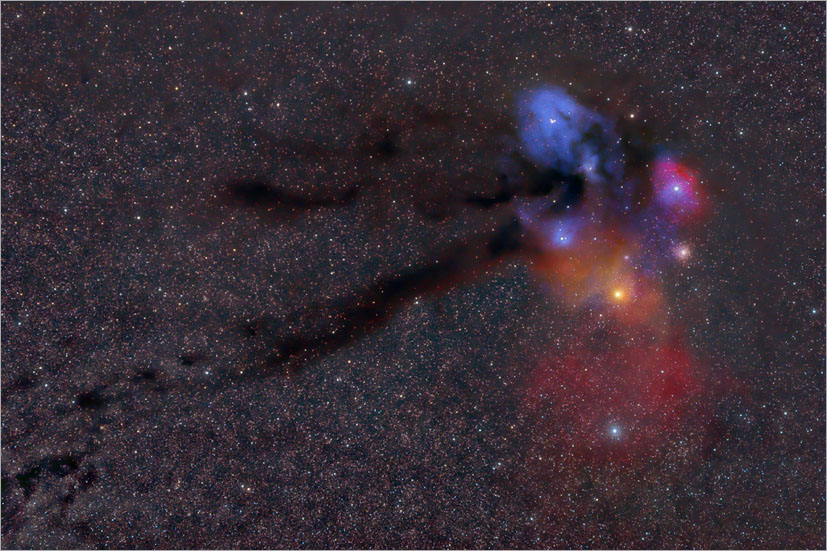

- Кто ведёт:
- Тихоненко Илья (аспирант-астроном в СПбГУ)
- Когда проходит:
- пятница, 16:00
- Где проходит:
- ФМЛ №30, 207 кабинет
- «Антерес» ВК
- Астроолимпиады: новости от организаторов олимпиад по астрономии
- cайт Всероcсийской олимпиады по астрономии
- Важно помнить
- Кононович, Мороз «Общий курс астрономии»
- Hannu Karttunen, Pekka Kröger, Heikki Oja, Markku Poutanen, Karl Johan Donner «Fundamental astronomy»
Материал для лекций берётся в основном из этих двух книг. Дополнительно можно глянуть:
- П.Г. Куликовский «Справочник любителя астрономии»
- Eric Chaisson, Steve McMillan «Astronomy Today»
- (будет дополнено)